NeurIPS 2026 Workshop
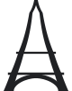
AI Data Readiness for Scientific Discovery
Data Infrastructure and Benchmarks for Reliable Scientific AI Systems.
Key dates
General registration for NeurIPS Paris has sold out.
Overview
Scientific AI is moving from curated prediction tasks toward systems that work directly with experimental data: foundation models, retrieval systems, and agents that query scientific knowledge, run analyses, and support follow-up decisions.
AIDaR focuses on two problems in this transition — how scientific data should be organized so models and agents can use it, and how evaluations should determine where frontier models are reliable. The workshop brings together researchers, industry scientists, and engineers building scientific data systems, foundation models, agents, biomedical evaluations, and industrial assay platforms.
Final speakers and panelists
Invited speakers
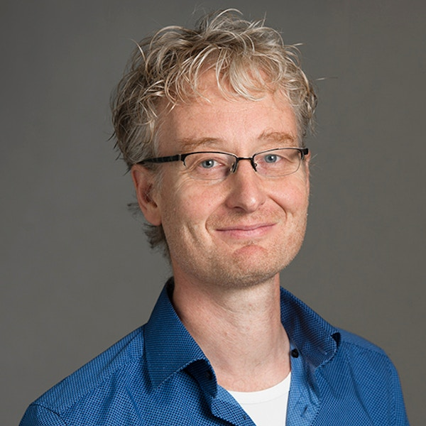
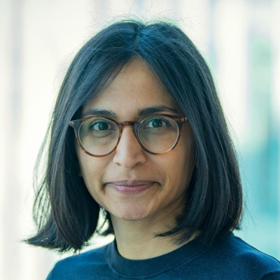
Panelists
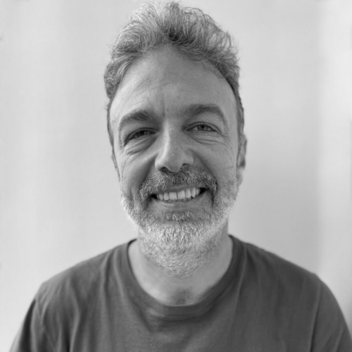
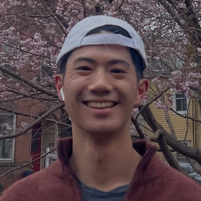
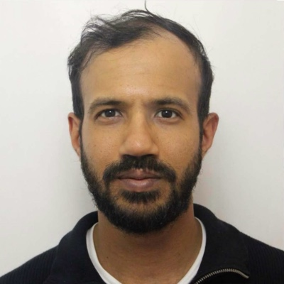
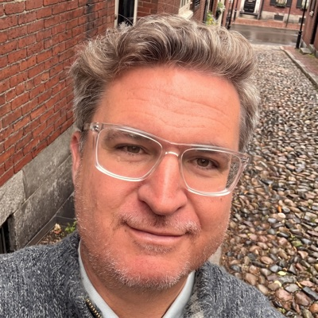
Workshop details
Data infrastructure for scientific AI
Scientific data must move from raw measurements into forms that models, retrieval systems, and agents can use: linking files to samples and assay conditions, preserving the steps that produced an analysis-ready dataset, and representing scientific relationships as tables, graphs, or knowledge networks. Topics include scientific foundation models, relational and graph-structured data, multimodal biomedical measurements, workflow systems, and large industrial datasets used for model training and wet-lab feedback.
Evaluations for scientific AI
Scientific AI systems should be tested on tasks that resemble real scientific work: choosing inputs, running analyses, checking controls, interpreting noisy results, and recovering biological or physical conclusions from data. Topics include biological reasoning, practical data analysis, retrieval over structured scientific knowledge, multimodal biomedical data, failure analysis, and studies of where performance changes across assays, platforms, or workflows.
Format
Structure. Short invited talks, central contributed work, poster and demo sessions, and breakout groups that produce short written outputs for the post-workshop report.
Talks. Invited talks open with scientific data systems and ground the evaluation discussions in biomedical data.
Panels. Panel 1 asks how to build evaluations that approximate real scientific work rather than ranking models on static benchmarks. Panel 2 covers the infrastructure that makes experimental data usable by scientific AI systems.
Breakouts. Groups will examine real use-cases, considering how scientific datasets, metadata, and human feedback should be organized for model and agent use, as well as the conceptual framing of the AI data readiness problem. Sessions will be led by Eric Durand (Rivercell), Annalisa Pawlosky and Pooja Rao (Google Research), and Fabio Boniolo and Matthew Osman (Polyphron).
Call for papers
We invite technical papers, benchmarks and evaluations, data-system reports, workflow and tool demos, and failure analyses. Submissions should connect data organization or evaluation design to downstream model or agent behavior on scientific tasks.
Submissions are closed
Submission types
Full papers (up to 8 pages) present complete work: a scientific data system, benchmark, or evaluation, with methods, results, and analysis.
Short papers (up to 4 pages) present focused contributions, work in progress, position pieces, or tool and dataset demos.
Formatting and review
- Papers must use the NeurIPS 2026 style files; references and appendices are excluded from the page limit.
- Reviewing is double-blind; anonymize the submission and any linked material.
- Disclose any use of large language models and their role.
- The workshop is non-archival.
- OpenReview is the official submission system. You may optionally add a checked, machine-readable copy of your project through AIDaRS, our GitHub review pilot.
Accepted papers
Camera-ready
- Upload the final paper through OpenReview by November 20, 2026, 11:59 p.m. AoE.
- Papers may be extended to 9 pages, excluding references and appendices.
- Use the official NeurIPS 2026 formatting guidelines.
- Please address relevant reviewer feedback in the final version.
- AIDaR is non-archival: accepted papers will not appear in the NeurIPS proceedings.
Posters
- Accepted papers with an in-person presenter are presented as posters.
- Format: portrait, 61 cm (W) × 85 cm (H).
- See the NeurIPS 2026 poster instructions for printing and other details.
Tentative schedule
| 09:00 | Opening remarks |
| 09:10 | Talk: Max Welling (University of Amsterdam) |
| 09:40 | Talk: Xinyi Zhang (Aithyra) |
| 10:10 | Contributed spotlights |
| 10:30 | Coffee break |
| 10:50 | Talk: Kaeli Rizzo (Cold Spring Harbor Laboratory) |
| 11:10 | Talk: Chris Zou (LatchBio), opening Panel 1 |
| 11:25 | Panel 1: Benchmarking AI on practical biologyPablo Meyer Rojas, Chris Zou, Jon Laurent, Karin Hrovatin, Hasan Poonawala |
| 11:55 | Poster and demo session, lunch |
| 13:10 | Talk: Kexin Huang (Phylo / Biomni) |
| 13:30 | Talk: Eric Durand (Rivercell) |
| 13:50 | Contributed spotlights |
| 14:30 | Poster and demo session, coffee |
| 15:10 | Talk: Pierce Ogden (Manifold Bio), opening Panel 2 |
| 15:25 | Panel 2: Engineering assay data systems that models and agents can useJames McGann, Pierce Ogden, Leonard McCline, Stefan Harrer |
| 15:55 | Talk: Pooja Rao (Google Research) |
| 16:20 | Breakout sessions |
| 17:05 | Breakout report-out and closing remarks |
Organizers
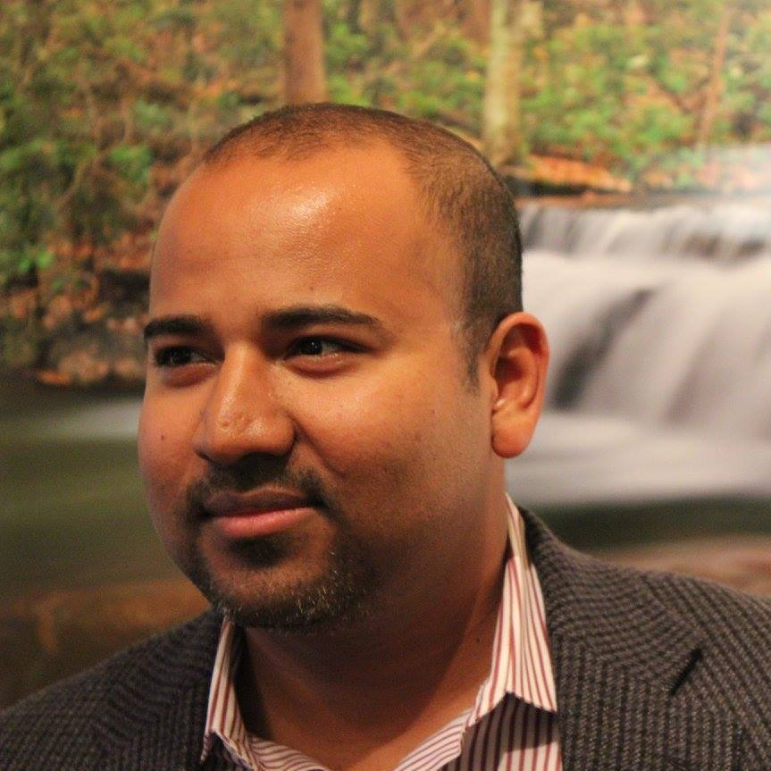
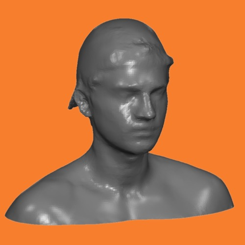
Advisory Board
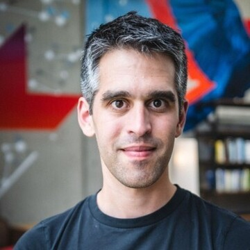
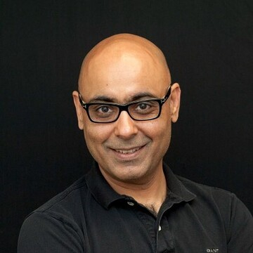